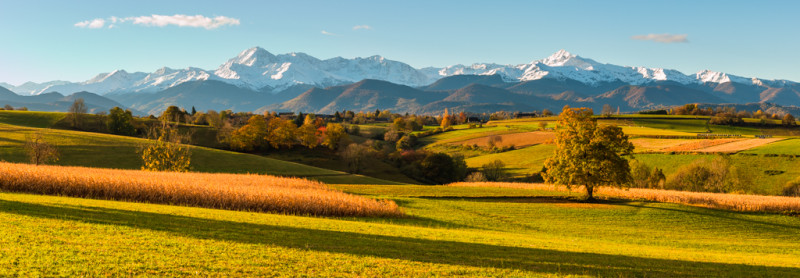

LA VILLE ROSE
Toulouse, inattendue & conviviale
VILLE DE PATRIMOINE ET TERRE D'AVENTURES
Expositions, concerts, festivals… la Ville rose a plein d’événements à l’affiche ! Et pour les plus gourmands, il y a toujours un nouveau restaurant à découvrir.
Il faut prendre le temps de flâner dans les ruelles et sur les places du centre-ville pour apprécier la convivialité d’une ville du sud et voir les terrasses s’animer à toute heure de la journée. Des bords de Garonne aux monuments historiques, de la Cité de l’espace à Airbus, Toulouse surprend par ses multiples facettes.
Le guide de voyage Lonely Planet a élu Toulouse comme la première destination urbaine à visiter en 2025. Alors n’attendez plus, destination Toulouse !

Les incontournables
DE TOULOUSE, C'EST AUSSI...
Voici une sélection des essentiels de Toulouse, à voir ou à faire absoluement lors de votre séjour


Autour de toulouse

